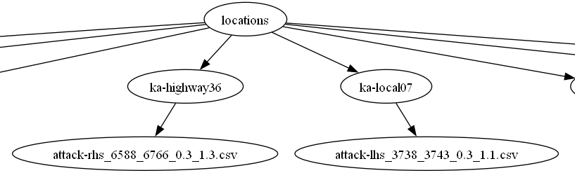
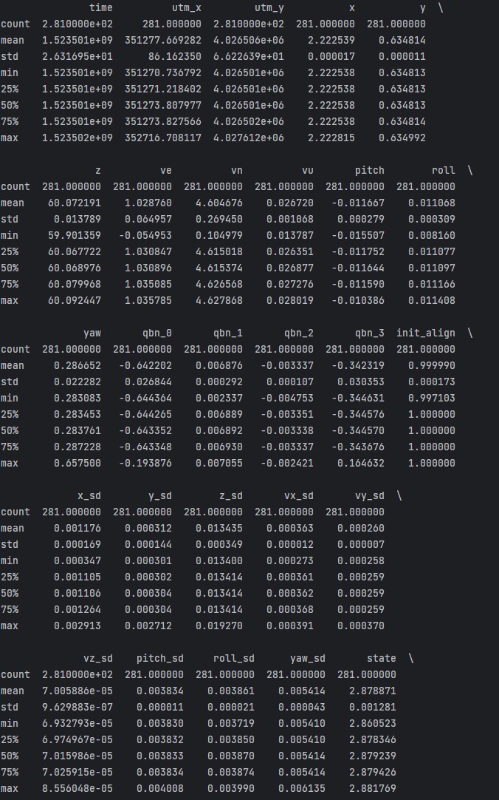
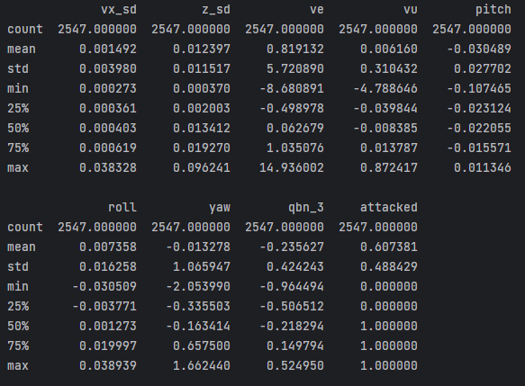
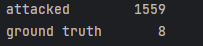
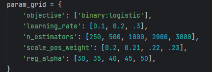
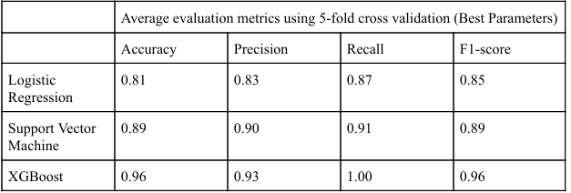
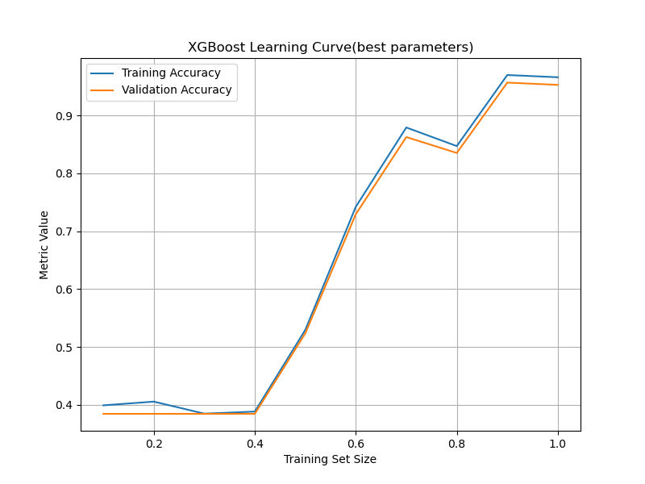
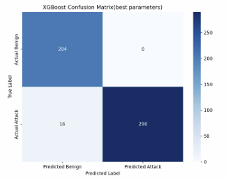

Project Overview
Sponsored by the Purdue School of Industrial Engineering, I worked with a team of 4 others with the goal of
creating a model to detect cyberattacks in sensor data from automated vehicles. We wanted the model to have minimal runtime, and achieve at least 90% accuracy on our test data.
Beginning with a massive amount of data, we transformed it as we saw fit and were able to produce a model that met our expectations for success.
Initial Dataset Description
The dataset consists of numerous csv files each containing different localization sensors as features.
Each csv represents locational data over time, which is essentially a vehicle trajectory.
There are two types of csvs: one representing the "ground truth" trajectories and the other representing a trajectory which was attacked.
Many attacked trajectories were generated from each ground truth using an algorithm called "fusionripper", with different parameter settings leading to different variations of attack. This includes starting the attack at a different time and with different strengths.
For 8 different routes, between 200-300 different attacks were generated from their original ground truths. There were no null entries in any of the csv files.
This data was derived from the "Complex Urban Dataset".
More information can be found on the dataset's original website.
Here is how our data appeared initially:

The first level is the base directory, the second level each represent a location, and the final level represents vehicle trajectories.
For simplicity, only one csv trajectory is portrayed per location, but there are between 200-300 of them per location.
The 28 attributes of each csv are below:
- time: timestamp of localized position; each row is approximately one second
- x, y, z: longitude (in radians), latitude (in radians), height (in meters) of localized position
- utm_x, utm_y: longitude and latitude given in a separate unit
- ve, vn, vu: velocity in the east, north, and up directions (in m/s)
- pitch, roll, yaw: Vehicle orientation, represented in Euler angles of the vehicle (in radians). In particular, yaw is the heading.
- qbn_0, qbn_1, qbn_2, qbn_3: Vehicle orientation, represented in a Quaternion. They are the qw, qx, qy, qz components in the quaternion, respectively.
- init_align: Initial heading of the vehicle
- x_sd, y_sd, z_sd, pitch_sd, roll_sd, yaw_sd, vx_sd, vy_sd, vz_sd: derived standard deviation of numerous features
Here is some statistical info of each attribute:

Within each of the csvs is thousands of rows
Data prep
When discussing with our project sponsor, we made the decision to aggregate each csv using the mean values of each feature. This resulted in one row per trajectory.
Now, instead of handling over a million entries across all locations, we were handling 2546 entries.
We then concatenated the produced attack rows together and ground truth rows together as well into one new dataset which was much more straightforward to work with.
We then labeled each row as either attack or benign, then, using XGBoost's feature importance scale, we removed all but 8 of the original attributes within the data.
Finally, in preparation for training, we standardized all features remaining using sklearn's standardscaler. This also allowed us to remove outliers; any entries with a z-score value greater than 2.5 were removed.
The attributes of each csv after data prep are below:
- vx_sd, z_sd: x and z position's standard deviations
- ve, vu: velocity in the east and up directions (in m/s)
- pitch, roll, yaw: Vehicle orientation, represented in Euler angles of the vehicle (in radians). In particular, yaw is the heading.
- qbn_3: Vehicle orientation, represented in a Quaternion. They are the qw, qx, qy, qz components in the quaternion, respectively.
Here is statistical info about the final dataset:

Modeling
We began by selecting the models we wanted to test with our data. We opted for logistic regression, support vector machine, and XGBoost considering our task was classification on a dataset with entirely numerical features.
I was responsible for the XGboost model. During initial training leaving all parameters default, I was met with concerning high test metrics.

Looking into the learning curves, they both remained almost perfect throughout, and the test curve was completely flat.
Before looking into parameter optimization, I looked back into our data
and realized that the strange performance could be caused by the massive discrepancy between the number of ground truth trajectories and attacked trajectories.

To combat this, I created a script which bootstrapped
more ground truth entries into our final dataset by sampling with replacement from the originals.
Training on this more balanced data resulted in a more realistic set of performance metrics:

Though the metrics were lower, they gave a solid ground to improve on, especially since I hadn't begun parameter optimization yet.
Moving on to parameter optimization, I used grid search with the following ranges:

Using the newly optimized parameters, the model performed much better and had no anomalies in its learning curves, as will be discussed below.
Findings and Performance Evaluation


In its final form, the XGboost model was able to successfully identify anomalies with excellent evaluation scores.

All metrics used were >.9 which meets the performance goal set at the beginning. The learning curves look natural and don't depict any
concerning trends.
The most important features identified by XGBoost were vu, vx_sd, z_sd, roll, and qbn_3. The data and model confirm some initial thoughts on what features may have a great impact in
identifying vehicles under cyberattack, such as velocities in certain directions and their standard
deviations. Additionally, other features, like a vehicle’s z-coordinate, rotation about the
longitudinal axis, and orientation in a Quaternion played an important role in this identification
process. All five of these features are plausible and align with the general understanding of a
vehicle under a cyberattack
Future Work
Future work includes improving the model by training on a larger source of data. If we were able to gather more ground truth trajectories at different locations, we could deal with the misbalance in the numbers of
ground truths and attack trajectories organically rather than through bootstrapping.
Code
The code for this project is available on GitHub.
Project takeaways
This project reinforced numerous data-science skills for me throughout its course, including data cleaning and modeling.
Dealing with data in the format it was initially provided was new to me;
I had to come up with an efficient method to parse all the data from its different locations on the disk.
I'd also never used the xgboost classifier before, so I ended up learning its training process and important parameters.
I also improved in the more general applications towards a project. I often had to direct my team towards a particular goal.
I devised most of our approach towards modeling and data prep, so I had to clearly convey what we had to do, and direct individual members towards certain tasks.
Though it comes in many projects, running into problems with the project and having to devise workarounds cumulatively prepares me to deal with other ones in the future.